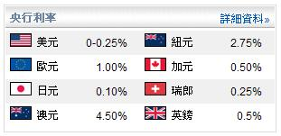

報價慣例
外匯市場的報價可能會令人感到混淆，因為您在市場建立的任何一個持倉實際上是兩個不同的持倉。
就外匯來說，貨幣將會以一對對的方式列出。外匯為您提供較其他市場更多的選擇。舉例說，您可能看好歐元，因此希望買入歐元。就外匯
而言，您可以選擇以何種貨幣買入歐元。您可以用美元買入歐元，又或用日元買入，適隨尊便。您可以用我們所提供的一系列其他貨幣買入歐元。
因此，貨幣對將會以下列方式顯示。
歐元/美元
第一隻列出的貨幣稱為"基礎貨幣"，而第二隻列出的貨幣則稱為"相對貨幣"或"報價貨幣"。因此，就歐元/美元而言，歐元是基礎貨幣，而美元則是相對貨幣。若此貨幣對的匯價是1.4700，這個報價顯示買入一個單位的基礎貨幣需要多少相對貨幣。故此，買入一歐元需要1.47美元。
建立交易時，請緊記當您在任何時候建立持倉，您正建立基礎貨幣的持倉。因此，若您買入一個貨幣對，您正買入基礎貨幣。若您賣出一個貨幣對，您正賣出基礎貨幣。所以，您很容易便能夠記住，相對貨幣所做的恰好相反。若您買入歐元/美元，您正買入歐元及賣出美元。
若您仍然感到十分困惑，可簡單地以這個方式去想。若您認為匯率將會攀升就買入；若您認為匯率將會走下坡則賣出。就是這樣簡單。
您經常會看到兩邊的報價——買入價及賣出價。買入價是您可以買入該貨幣對的價位，而賣出價是您可以賣出該貨幣對的價位。兩個價格之差稱為"買賣差價"。買賣差價由價格提供者及那一刻的市場流通量厘定。
所有可買賣工具、股票、債券、期貨、期權等都存在買賣差價，只是交易者未必能時常察覺得到。
綜上所述，相信您已有所瞭解貨幣對是如何報價以及當您建立交易時，您正買入及賣出的是什麼貨幣。
點
"點"指以百分率計算的一點。簡單來說，在外匯世界中，一點即計算盈利及虧損的"點"。就標準(10k)帳戶而言，每點約相等於一個單位的帳戶結算貨幣。舉例說，若您的帳戶以美元作為結算單位，每一點(視乎貨幣對而定)約相等于1美元。就微型帳戶而言，每點的金額約相等於標準帳戶的十分之一——即約為0.10美元。
就涉及日元(JPY)的所有貨幣對而言，一點為百分之一——即小數點後第2個位。就所有其他貨幣對而言，一點為萬分之一——即小數點後第4個位。
至於如何計算每點價值，以下是一條簡單的公式。
首先從您的交易單位入手。微型交易合約為1k，因此，若您希望使用微型交易合約的點值，請使用1,000。若您希望使用標準手的點值，請使用10,000。之後，您將交易單位乘以所買賣的貨幣對的一 點。
部份人對此可能會茫無頭緒，那麼我們就舉例說明吧。
在以下例子中，我們將會計算一手10k的歐元/美元的點值。
由於我所用的是標準10k交易單位，一開始我會用10,000。將10,000乘以".0001"，因為所有貨幣對的 點都是10,000分之一(日元貨幣對除外)。
得出的數值是1。這個數字將會以我所買賣的貨幣對中的"相對貨幣"(第二貨幣)來計值。在本例中，我所買賣的是歐元/美元，所以美元是貨幣對中的相對貨幣。就一手10k的歐元/美元而言，一點的價值為1美元。
若我的帳戶以美元作為結算貨幣，每當歐元/美元隨市場變動1點，我的帳戶將會產生1美元的盈利或虧損。
杠杆及保證金
杠杆及保證金是一個您需要明白的重要概念，因為若使用不當，杠杆可能很快便會為您招致麻煩。若運用得宜，杠杆可增加您的交易策略的盈利能力。
"杠杆"及"保證金"所指的是同一個概念，只是觀點稍為有所不同而已。當交易者建立持倉時，他們需要"真誠地"交出持倉價值一部份的金額。在這個情況下，交易者可以說是"已使用杠杆"。需要交出的金額則稱為"保證金要求"。保證金要求往往亦稱為"信用保證金"，因為交易者一般可在平掉持倉後取回該金額。我在這裏表示"一般"，是因為若出現追加保證金的話，情況便會截然不同，有關情況將會在稍後詳加說明。
為清楚起見：保證金存款是交易的要求，而非交易的成本。
外匯市場的一大好處是它就任何可買賣金融工具提供了部份最低的保證金要求。這表示您的帳戶的購買力遠高於規模相同的股票交易帳戶或債券交易帳戶。
現在就研究一個杠杆及保證金的例子吧。
假設交易者建立一手10k美元／日元貨幣對的持倉。交易者無需交出10,000美元，他們只需要交出50美元或100美元。(實際的金額是多少，將取決於帳戶所設定的水準。)模擬帳戶的預設杠杆是200:1，因此一個10k持倉的保證金要求只是50美元(10,000的0.5%)。若交易者建立兩手10k的單子，他們的總持倉將會是20,000，而現在的保證金要求就是100美元。
值得注意的一點是，保證金要求並非持倉可能虧損的最高限額。這只是經紀商要求您交出用以建立持倉的金額。您需要時刻緊記持倉的實際大小，因為盈虧將會以持倉的規模為基礎計算，而非所需保證金的金額。
下表提供其他例子:
| 所需保證金 | 持倉單位 - 名義價值 | 杠杆 | 保證金 % |
| $50 | $10,000 | 200:1 | 0.5% |
| $100 | $10,000 | 100:1 | 1% |
| $200 | $10,000 | 50:1 | 2% |
交易者必需時常緊記，杠杆是一把雙刃劍：當持倉向有利於您的方向移動時，高度杠杆可以擴大盈利，而當持倉向不利於您的方向移動時，則將擴大虧損。
基於這個原因，切勿使過多的帳戶價值承受風險及/或建立相對於帳戶規模來說過多的持倉，以致您的帳戶過度杠杆化。
至於何謂過多，則因個別交易者而異。短線交易者一般都慣於使用較大的杠杆，因為他們知道持有倉位的時間不長。較為長線的交易者所用的杠杆較低，這樣一來輕微的波幅並不會導致他們的持倉被平掉。我們建議您在類比帳戶內就不同的交易策略試用不同的杠杆，從而找出最適合您的交易模式。請緊記，可使用大量杠杆並不表示您應時常使用高杠杆。
過夜利息
我們將會在這一節討論過夜利息。我們會先說明過夜利息的概念，然後再看一個計算過夜利息的例子。我們將會向您示範如何利用過夜利息，因為不少成功的交易者都會將它視為交易策略的重要一環。
過夜利息是持倉過夜所支付或賺取的利息。每只貨幣相關的目標利率(一般由該貨幣的中央銀行所厘定)。請參閱以下列子：

正如我們在查看外匯報價中曾提及，每當您建立外匯持倉時，您正買入某一貨幣及賣出另一貨幣。因此，您將會賺取您所買入的貨幣的利率，及支付所賣出的貨幣的利率。淨差額將會作為過夜利息每日(GMT時間0時)存入您的帳戶或從中扣除。值得注意的是，過夜利息只適用於在GMT時間0時持有的開倉部位。若您在過夜利息時間之前平掉持倉，或在過夜利息時間之後才建立持倉，將不會獲支付或扣除任何利息。
值得注意的一點是星期三的過夜利息。這可能會令人感到混亂，所以若您未能正確掌握亦無需感到憂慮。
一般來說，外匯是一個兩日交付的市場。這表示持倉將會在建立後兩日才會交收。在星期三，持倉將會轉倉為星期四的持倉。技術上來說，這些持倉將會在星期六交收。銀行在星期六休息，因此，持倉將會經過週末轉倉至星期一。簡言之，星期三的過夜利息一般相等於三日的利息。過夜利息不適用於在星期六及星期日持有的開倉部位。
希望現在您已比較清楚如何利用過夜利息。
外匯市場時間
由於外匯交易在全球各地進行，因此市場每日24小時開放。交易者必需知道主要市場的活躍交易時間，及如何根據這些時間進行交易。
作為一項一般性原則，某一特定貨幣通常會在該特定市場開市時最為活躍。以英鎊及其相關貨幣對為例，雖然它們每日24小時都非常活躍及可供買賣，但卻傾向在倫敦市場的交易時段最為活躍及廣泛受到買賣。與此同時，日元及其相關貨幣對在東京營業日會廣泛受到買賣。
主要外匯市場的交易時間如下：
倫敦－美東時間淩晨3時至中午12時 (占總外匯交易量 ~35%)
紐約－美東時間早上8時至下午5時 (占總外匯交易量 ~20%)
悉尼－美東時間下午5時至淩晨2時 (占總外匯交易量 ~4%)
東京－美東時間下午7時至淩晨4時 (占總外匯交易量 ~6%)
您可以透過多個方式運用上述資料。在某一時間所執行的交易越多(假設一切維持不變)，買賣差價將會越小。更大的流通量將會造成更小的買賣差價。
因此，我們可以看到於美東時間上午8時至上午11時，兩大市場(倫敦及紐約)會重疊約3小時。這對不少交易者來說是一個主要交易時段。請緊記，每一個交易日都各有不同，故無法保證此時段會定期產生可觀的交易量。然而，當倫敦及紐約市場同時開放及交易時，往往會產生更多交易機遇。
儘管東京及悉尼市場的交易時間有所重疊，但由於整體交易量大幅低於前者，因此其重要性不及倫敦及紐約的重疊時段。
週末交易
雖然外匯市場在技術上來說永遠不會收市，但實際上所有主要銀行及交易實體都會在週末休息。週末的交易量極小，以致傾向未能為交易者提供什麼交易機遇。儘管部份活動會視乎週末可能發生的一些基本面消息而出現，一般來說，貨幣對的變動都微不足道，交易流通量極為稀疏，以致難以執行交易及買賣差價相當之大。
由於交易者各有不同，因此部份交易者會在週末維持開倉部份，而另一些則會在美東時間星期五下午4時之前將所有開倉部位平倉。
現在，您應該已經有所需的資料去明白外匯市場的交易時間。